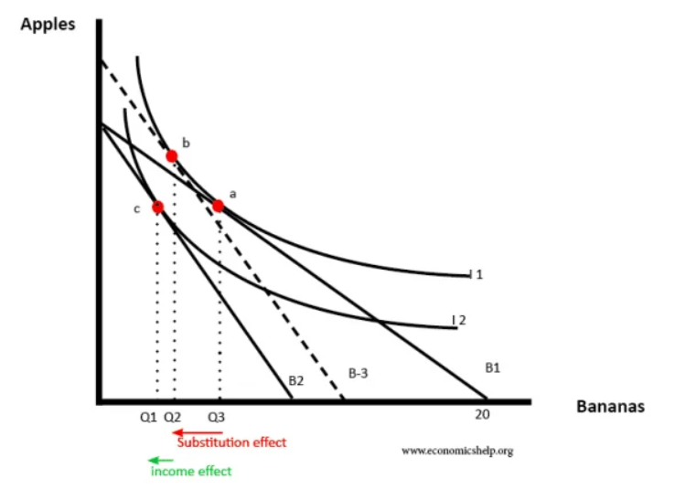
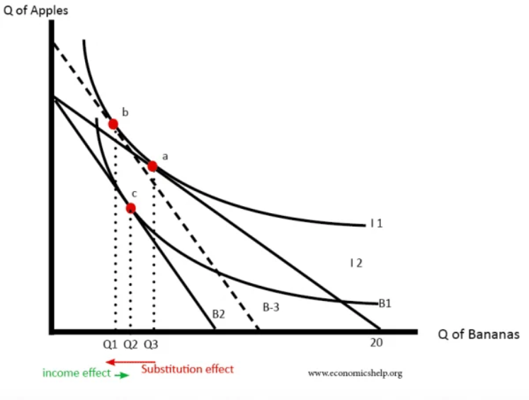
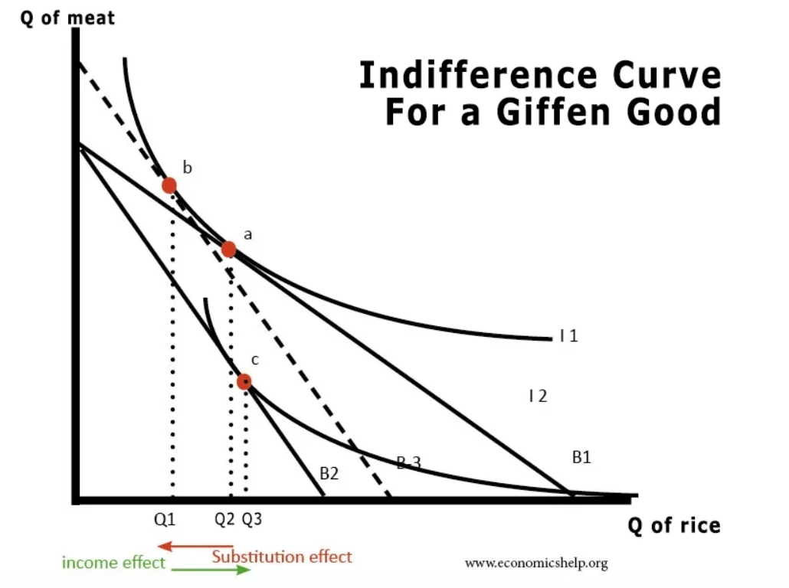

Indifference curves
The indifference curves shows all of the combinations of two goods that give the consumer equal satisfaction or utility

Higher indifference curves represent higher levels of satisfaction. IC2 provides a higher satisfaction than IC1. A rational consumer will
always opt for the highest indifference curve. Indifference curves cannot cross each other because that would mean the consumer was
being irrational.
The slope of the indifference curve is important - it represents the extent to which the consumer is willing to substitue one good
for another. The rate at which the consumer is willing to substitute one good for another is known as the marginal rate of substitution.
Budget lines
Consumers are restricted in what they are able to buy due to their limited disposable income and the prices of goods. These two
principles of consumer behavior: disposable income and price of goods, are brought together through a budget line.
A budget line shows numerically all the possible combinations of two goods that a consumer can purcahse with a given income and
given prices of the two goods.

Suppose Jose has $56 to spend on either movies or T-shirts.
Assume the price of a movie ticket is $7 and the price of a T-shirt is $14.
Each combination on the budget line costs $56 in total.
Any point along this line will produce an outcome where consumption is maximised
for this level of income. Any point below the line is feasible but not optimal, and any point above the line is not feasible
Causes of a shift in the budget line
If there is a change in the price of one good, with the income remaining unchanged, then the budget line will pivot.

For example, if the price of movie tickets increases from $7 to $14, while the price of T-shirts remain unchanged,
the budget line will pivot inwards.
As shown in the diagram on the left, now only 4 movie tickets can be bought with an income of $56.

When income changes, the budget line shifts instead of pivots.
For example, if José’s budget drops from $56 to $42,
the budget line will shift inward, as he is unable to purchase the same number of goods as before.
As income increases, more of each good is usually consumed.
This also indicates that both goods are normal goods.
However, if the increase in income results in less of one good being consumed then this
is indicative that this good is an inferior good. Inversely, the decrease in income will result in more of that inferior good being consumed.
In another scenario where consumers decide to spend between ramen and sushi. As the price of sushi falls relative to ramen, it is always
the case that rational consumers will begin to substitute ramen for sushi. This is known as the substitution effect of a price change.
With the price fall of sushi, consumers actually have more money to spend on other goods, sushi included. Real income has therefore increased. This is called
the income effect of a price change.

The budget line and the indifference curve can now be used together to show the effect of a change in income on the consumption of
of two goods.
A consumer's choice is optimal and yields the most utility at the point where the budget line touches the highest indifference curve.
The income and substitution effects of a price change

Income and substitution effect for a normal good
A rise in price changes the budget line. You can now buy less bananas. The budget curve shifts from B1 to B2 and
consumption falls from point a to point c (fall in Quantity of bananas from Q3 to Q1)
To find the substitution effect:
- Draw a new budget line (B-3) parallel to B2 but tangent to the first indifference curve
- Being tangent to first indifference curve enables the consumer to obtain the same utility as before (as if there was no change in income)
- By focusing on B-3, we are examining the effect of price change – ignoring any income effect
- The change from a to b (Q3 to Q2) is purely due to the substitution effect
However, income has fallen causing the consumer to choose a lower indifference curve I2. The change due to income is, therefore, b to c (Q2 to Q1)
In this case of a normal good, the income and substitution effect reinforce each other – both leading to lower demand.

Effect of a rise in the price of an inferior good
The substitution effect (using a parallel budget line of B-3) causes a big fall from a to b
However, the income effect leads to an increase in demand (Q1 to Q2)
Overall demand falls, but the substitution effect is partly offset by the income effect
This is because when income falls, the decline in income causes us to buy more inferior goods because we can’t afford normal/luxury goods anymore

Effect of a rise in the price of an giffen good
A giffen good is an unusual case of a type of an inferior good. With a giffen good, demand falls as the price of the good falls
and demand increases as price increases
We start at Q2, the rise in the price of rice, reduces the budget line for rice to B2.
But, the fall in income causes a large income effect that outweighs the substitution effect.
Demand for rice rises to Q3 with a big fall in demand for meat.
Example of a giffen good:
For low-income families, this could be a staple food such as rice. As the price of a rice increases,
consumption will increase since real income has fallen. More rice is now being consumed instead of other types of food. Alternatively, when
the price of rice decreases, demand for it falls as real income has now increased. Consumers has more to spend on
other things as the food items.
Limitations of the model of indifference curves
In reality, consumers have to choose from many more goods than just two. Sometimes they may have to choose between hundreds
of goods in the case of everyday food products
The term "indifference" implies that consumes are willing to accept any combination of two goods as represented by an indifference
curve. Some economists point out that consumers express their wants/need in rank order, and not indifference.
Indifference curve assume that consumers act rationally. That is not always true.
Key Terms
Indifference Curve: this shows all of the combinations of two goods that give a consumer equal satisfaction
Marginal Rate of Substitution: the rate at which a consumer is willing to substitute one good for another
Budget Line: the combinations of two goods that can be purchased with given income and given prices
Substitution Effect: where, following a price change, a consumer will substitute the more expensive good for the one that is
cheaper.
Income Effect: where following a price change of a good, a consumer has higher real income and will purchase more of this good
Giffen Good: a type of inferior good where the quantity demanded falls as price falls and the quantity demanded increases
as price increases